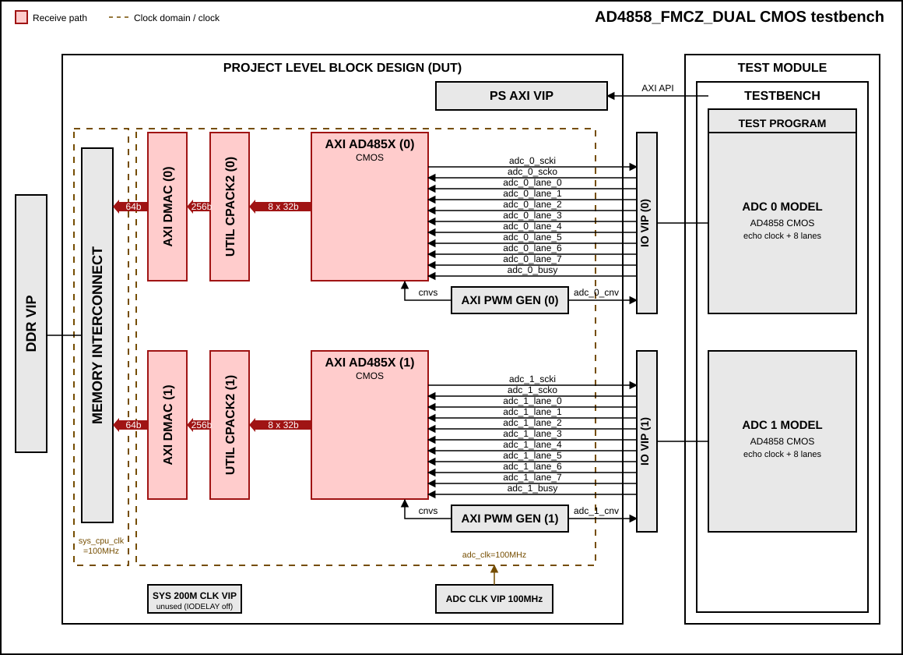
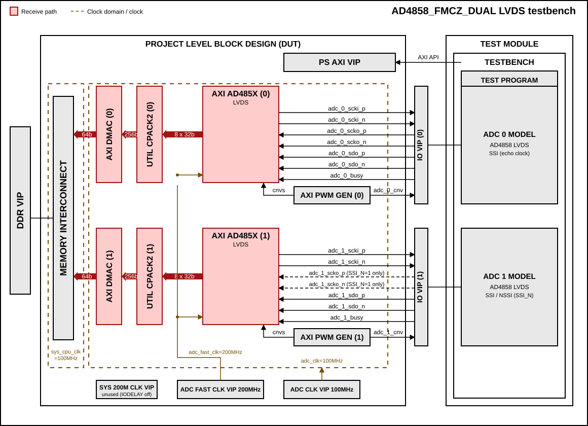

AD4858_FMCZ_DUAL
Overview
The purpose of this testbench is to validate the data interfaces functionality of the projects/ad4858_fmcz_dual reference design.
The reference design uses two AD4858 devices (20-bit, 8 channels,
simultaneous sampling), each connected to its own axi_ad485x core, DMA
and PWM generator. The testbench supports both CMOS and LVDS interface modes.
The two ADC instances are verified in parallel: both are triggered and read out at the same time, their data is transferred to DDR through two DMA channels and then checked against the expected values.
The main differences compared to the single device testbench are:
Two independent ADC, DMA and PWM generator instances, each with its own base address and its own set of signals (
_0_and_1_).For the LVDS interface, ADC 0 always uses the echo clock (SCKO). ADC 1 either uses the echo clock too (source synchronous,
SSI_N = 1) or has no echo clock and uses the non-source-synchronous (NSSI) capture path (SSI_N = 0).The ADC clocks come from clock VIPs instead of the
axi_clkgenMMCM.
Block design
The testbench block design includes part of the AD4858_FMCZ_DUAL HDL reference design, along with VIPs used for clocking, reset, PS and DDR simulations.
Block diagram
The data path and clock domains are depicted in the below diagrams:
AD4858_FMCZ_DUAL CMOS interface


Legend
Both ADCs use the echo clock (SCKO) and 8 data lanes, so the
SSI_Nparameter has no effect.The ADC clock comes from a clock VIP (100 MHz) instead of the
axi_clkgenMMCM, and the memory path runs onsys_cpu_clk.The IO delay primitives are bypassed, so
sys_200m_clkis not used by the interface.
AD4858_FMCZ_DUAL LVDS interface


Legend
ADC 0 always uses the echo clock (SCKO).
ADC 1 SCKO (dashed) is connected only when
SSI_N=1. WithSSI_N=0(NSSI) ADC 1 has no echo clock and is aligned with the valid/index delay taps.The ADC clocks come from clock VIPs (
adc_clk100 MHz andadc_fast_clk200 MHz, half of the hardware frequencies), and the memory path runs onsys_cpu_clk.
Clocking
The ADC clocks are generated by clock VIPs, bypassing the MMCM of the
axi_clkgen to avoid a long lock time in simulation:
Clock |
Frequency |
Usage |
|---|---|---|
|
200 MHz |
Reference clock of the |
|
100 MHz |
ADC core clock, DMA FIFO write clock, PWM |
|
200 MHz |
LVDS only: serializer/deserializer clock |
Note
The clock VIP can only generate periods that are a whole number of
nanoseconds. A 400 MHz clock (2.5 ns) would be rounded to 3 ns, which breaks
the 4:1 DDR serialization of the LVDS interface. For this reason the
simulation runs the ADC clocks at half of the hardware frequencies
(100/200 MHz instead of 200/400 MHz). The ratio between adc_fast_clk and
adc_clk is the same as in hardware (2:1).
The input delay primitives are bypassed in simulation (IODELAY_ENABLE is
set to 0 for both ADC cores), and the memory path (DMA, interconnect, DDR VIP)
runs on a single clock domain.
Configuration parameters and modes
The following parameters of this project can be configured:
DEVICE: Defines the target device. Only
AD4858is supported (20-bit resolution, 8 channels).LVDS_CMOS_N: Defines the physical interface type, same as in the HDL project. Options: 0 - CMOS, 1 - LVDS
SSI_N: Defines the synchronization of the second ADC in LVDS mode (ADC 0 is always source synchronous). Not used in CMOS mode. Options: 0 - ADC 1 is non-source-synchronous (NSSI, no echo clock), 1 - ADC 1 is source synchronous (SSI, uses the echo clock). The HDL project defaults to 0.
The following parameters of the HDL project are overridden by the testbench
for both axi_ad485x instances:
IODELAY_CTRL = 0: the IDELAYCTRL is not instantiated.
IODELAY_ENABLE = 0: the IDELAYE3 primitives are bypassed.
Configuration files
The following configuration files are available:
Configuration mode |
Parameters |
||
|---|---|---|---|
DEVICE |
LVDS_CMOS_N |
SSI_N |
|
cfg_cmos_rand |
AD4858 |
0 (CMOS) |
0 (not used) |
cfg_lvds_ssi_rand |
AD4858 |
1 (LVDS) |
1 (ADC 1 SSI) |
cfg_lvds_nssi_rand |
AD4858 |
1 (LVDS) |
0 (ADC 1 NSSI) |
Tests
The following test program files are available:
Test program |
Usage |
|---|---|
test_program_cmos |
Tests the CMOS interface |
test_program_lvds |
Tests the LVDS interface (SSI and NSSI, selected
by the |
Available configurations & tests combinations
The test programs must match the interface type of the configuration. The two
LVDS configurations use the same test program, which adapts the ADC 1 model to
the SSI_N value of the configuration:
SSI_N = 1: ADC 1 is modeled like ADC 0, with the echo clock (SCKO) following the input clock.SSI_N = 0: ADC 1 has no echo clock. The most significant bit is placed on SDO before the first clock edge and SDO is delayed by half of the bit period, so that it is stable when sampled.
Configuration |
Test |
Build command |
|---|---|---|
cfg_cmos_rand |
test_program_cmos |
make CFG=cfg_cmos_rand TST=test_program_cmos |
cfg_lvds_ssi_rand |
test_program_lvds |
make CFG=cfg_lvds_ssi_rand TST=test_program_lvds |
cfg_lvds_nssi_rand |
test_program_lvds |
make CFG=cfg_lvds_nssi_rand TST=test_program_lvds |
Error
Mixing a wrong pair of CFG and TST (e.g., CMOS config with LVDS test) will result in a simulation error. Please use the matching interface type.
CPU/Memory interconnect addresses
Below are the CPU/Memory interconnect addresses used in this project:
Instance |
Address |
|---|---|
axi_ad4858_0 |
0x43C0_0000 |
axi_pwm_gen_0 |
0x43D0_0000 |
ad4858_dma_0 |
0x43E0_0000 |
adc_clkgen |
0x4400_0000 |
axi_ad4858_1 |
0x44C0_0000 |
axi_pwm_gen_1 |
0x44D0_0000 |
ad4858_dma_1 |
0x44E0_0000 |
ddr_axi_vip |
0x8000_0000 |
Interrupts
Below are the Programmable Logic interrupts used in this project:
Instance name |
HDL |
|---|---|
ad4858_dma_0 |
10 |
ad4858_dma_1 |
11 |
Test stimulus
Test parameters
The following test parameters are available:
packet_format: Defines the packet format mode. Options: 0, 1, 2, 3
packet_format
AD4858 (20-bit)
0
20 bits
1
24 bits
2/3
32 bits
crc_en: Enables CRC checking. Options: 0 - Disabled, 1 - Enabled
os_en: Enables oversampling mode. Options: 0 - Disabled, 1 - Enabled
The test programs internally generate all valid combinations of
packet_format, crc_en and os_en, then randomly select a few test
cases to run: 2 to 3 cases for LVDS and 2 cases for CMOS. The same settings are
applied to both ADC instances. Each test case captures 16 conversions (LVDS) or
10 conversions (CMOS) on every channel of both devices.
Note
The combination of CRC and oversampling is not supported and is excluded from the generated test cases: the start of the transfer is triggered by every oversampling sub-conversion, which resets the channel index tracking before the CRC packet can be captured.
Note
The conversion period of the PWM generators is chosen so that the longest
readout (9 words of 32 bits, with CRC) completes before the next
conversion starts. If the readout does not fit, the test program prints
Data transaction doesn't meet minimum timing requirement!.
Test programs
Both CMOS and LVDS test programs share the same structure, consisting of the following tests:
Environment bringup
The steps of the environment bringup are:
Create the environment
Start the environment
Start the clocks
Assert the resets
Sanity test
This test is used to check the communication with the AXI interfaces by:
Testing the sanity of both DMAs (read/write SCRATCH register)
Testing the sanity of both PWM generators
Data acquisition test
For each selected test case, the following steps are executed on both ADC instances:
Reset and enable the ADC cores
Configure the packet format and oversampling mode
Enable CRC checking
Configure the number of active lanes
For LVDS with
SSI_N = 0, configure the NSSI valid/index delay taps of ADC 1Enable ADC channels
Prepare the expected test data
Configure the clock generator (axi_clkgen)
Configure both DMAs for data reception (separate destination addresses in DDR)
Configure and start both PWM generators for conversion triggering
Wait for both DMA transfers to complete (in parallel)
Verify the data captured in DDR from each ADC against the expected values
Perform CRC verification on each channel
Reset the ADC models before the next test case
Stop the environment
Stop the environment
Building the testbench
The testbench is built upon ADI’s generic HDL reference design framework. ADI does not distribute compiled files of these projects so they must be built from the sources available here and here, with the specified hierarchy described Set up the Testbenches repository. To get the source you must clone the HDL repository, and then build the project as follows:.
Linux/Cygwin/WSL
Example 1
Build all the possible combinations of tests and configurations, using only the command line.
user@analog:~$
cd testbenches/project/ad4858_fmcz_dual
user@analog:~/testbenches/project/ad4858_fmcz_dual$
make
Example 2
Build all the possible combinations of tests and configurations, using the Vivado GUI. This command will launch Vivado, will run the simulation and display the waveforms.
user@analog:~$
cd testbenches/project/ad4858_fmcz_dual
user@analog:~/testbenches/project/ad4858_fmcz_dual$
make MODE=gui
Example 3
Build a particular combination of test and configuration, using the Vivado GUI. This command will launch Vivado, will run the simulation and display the waveforms.
user@analog:~$
cd testbenches/project/ad4858_fmcz_dual
user@analog:~/testbenches/project/ad4858_fmcz_dual$
make CFG=cfg_cmos_rand TST=test_program_cmos MODE=gui
Example 4
Build the LVDS interface tests, with ADC 1 source synchronous (SSI) or non-source-synchronous (NSSI):
user@analog:~$
cd testbenches/project/ad4858_fmcz_dual
user@analog:~/testbenches/project/ad4858_fmcz_dual$
make CFG=cfg_lvds_ssi_rand TST=test_program_lvds MODE=gui
user@analog:~/testbenches/project/ad4858_fmcz_dual$
make CFG=cfg_lvds_nssi_rand TST=test_program_lvds MODE=gui
Note
Do not run two simulations of the same configuration at the same time (for
example a GUI session and a batch run), as they share the same runs
folder.
In GUI mode, the waveform configuration of each test is loaded from
waves/<configuration name>.wcfg. It shows the clocks, the ADC interface
signals, the axi_ad485x outputs, the pack and DMA signals and the expected
versus captured data for both ADCs.
The built projects can be found in the runs folder, where each configuration
specific build has it’s own folder named after the configuration file’s name.
Example: if the following command was run for a single configuration in the
clean folder (no runs folder available):
make CFG=cfg_lvds_nssi_rand
Then the subfolder under runs name will be:
cfg_lvds_nssi_rand
Resources
More information
Support
Analog Devices, Inc. will provide limited online support for anyone using the reference design with ADI components via the EngineerZone FPGA reference designs forum.
It should be noted, that the older the tools’ versions and release branches are, the lower the chances to receive support from ADI engineers.